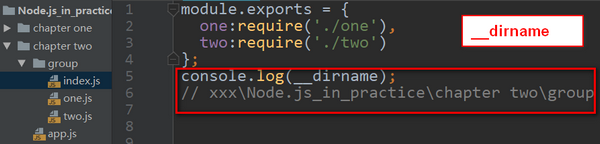
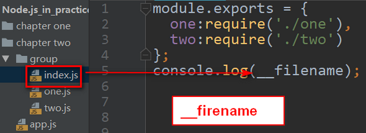

在前端学习过程中，涉及到路径的问题非常多，相对路径，绝对路径等。有时候明明觉得没问题，但是还是会出错。或者说线下没问题，但是到了线上就出现问题，因此弄懂路径问题，非常关键。我们需要知道为什么这个地方既可以使用相对路径，又可以使用绝对路径，为什么有些地方只能使用绝对路径。
const myClass = require('./myclass')
上面这段代码是我们在使用Node.js中经常会使用到的代码-引入模块。我们都知道如果加载的是核心模块，直接require(模块名)即可。但是使用本地模块，必须加上路径，这是为什么了？这与模块的查找顺序有关：
node 在查找模块的时候：
从上面node查找模块的顺序，我们可以知道他会一直在node_modules中查找，但是我们自定义模块都不在node_modules中，因此如果我们想要使用自定义模块，必须加上路径，使得它查找模块直接到我们指定的路径中进行查找。(ps:这是我个人研究的一点看法，可能并不正确，欢迎大家指正。)
有些时候，你需要打开一些不在模块系统中的文件来加载数据，但你需要通过当前脚本的路径来找到那个文件。这时候__dirname和__filename变量在这种场景下非常有用。这些变量保存着当前脚本的绝对路径。
__dirname:当前文件的目录的绝对路径，通俗的来说是当前文件的上一级。注意它的路径始终是固定的，与你的光标所在的位置无关(也就是说与你在哪个路径运行node无关)

如上图所示：index.js文件中console.log(__dirname)，最终得到的绝对路径是:
xxx\Node.js_in_practice\chapter two\group
最终路径到上一级group为止。
__filename:当前文件的绝对路径，包含当前文件的文件名。

如上图所示：在index.js中的文件路径应该是:
xxx\Node.js_in_practice\chapter two\group\index.js最终的路径包含文件名。其路径同样与在哪里运行node无关。